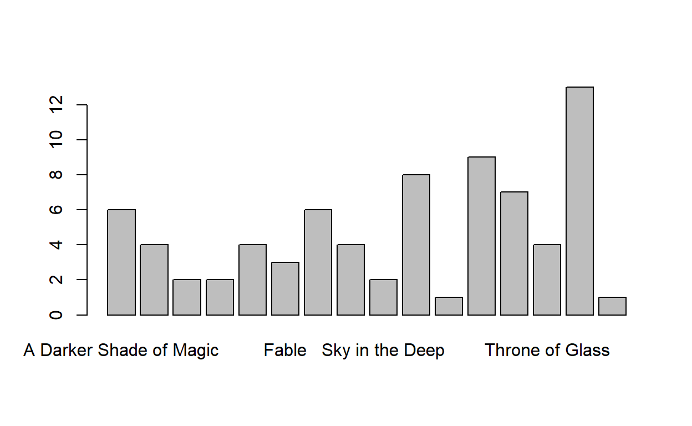
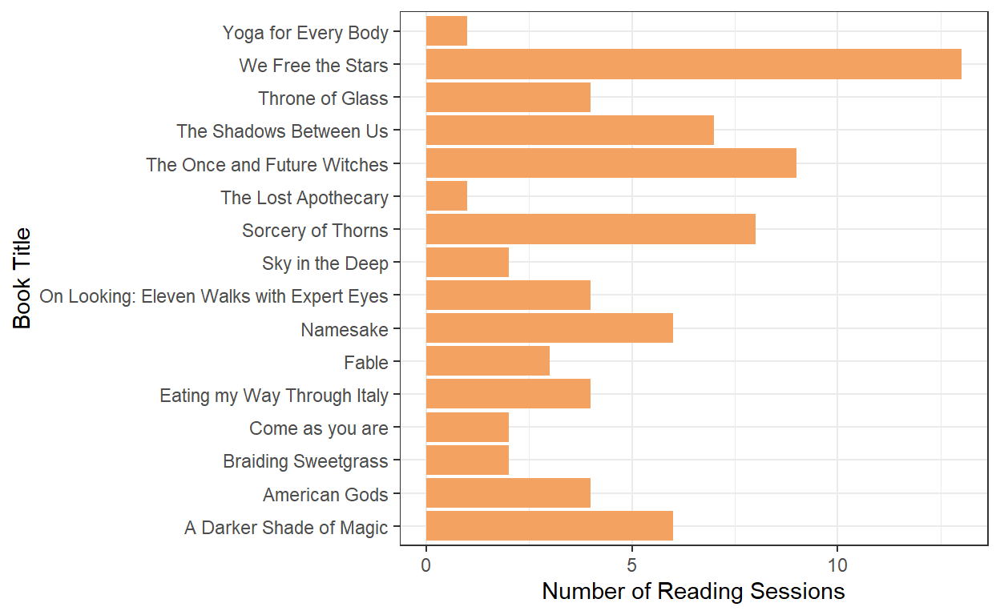
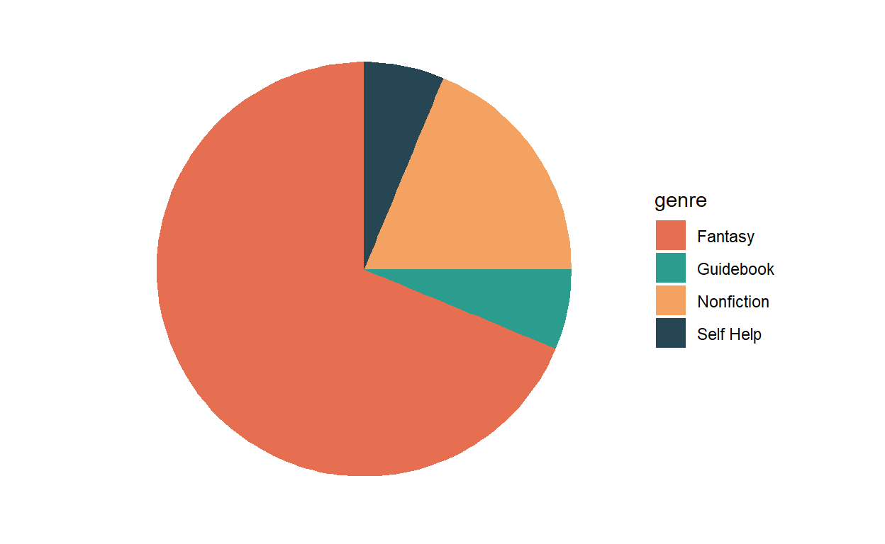
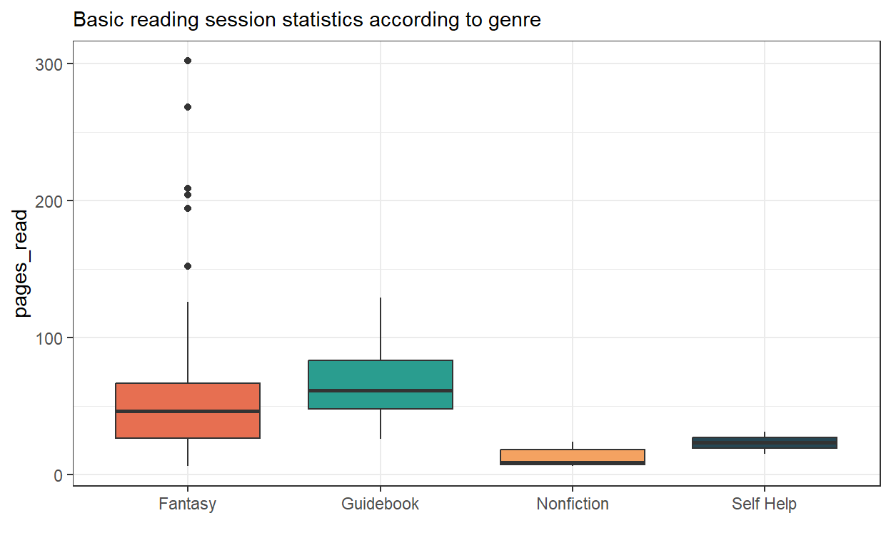
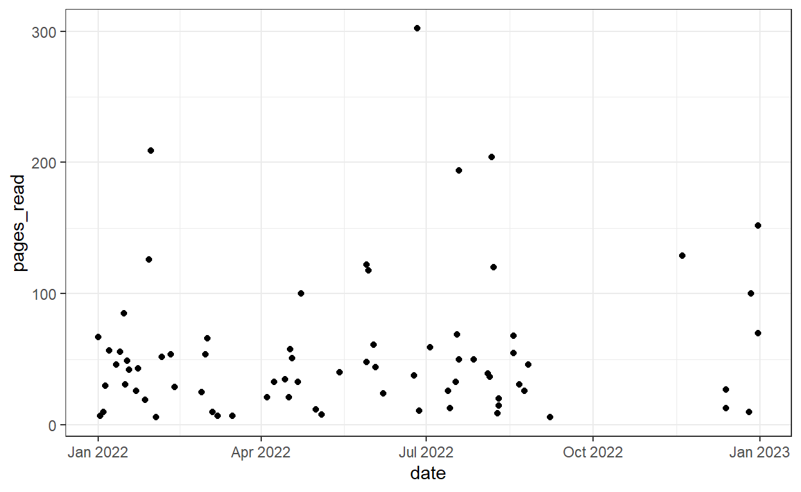
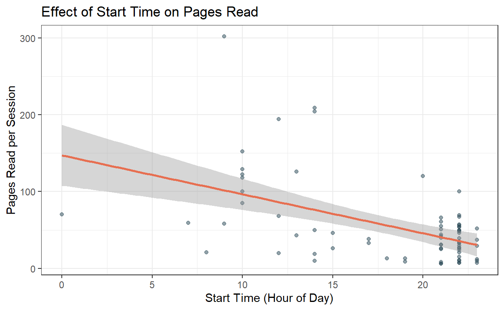

A visualization exercise based on self-collected reading session data.
After getting a library card at the end of 2021, I was so excited to tear through as many books as I could. My inner 7-year-old was happy as a clam as I checked out book after book and rediscovered my love of reading as an adult.
With the turn of the new year and my newly found interest in data and R thanks to grad school, I was on the hunt for a project that I could build from the ground-up and make my own. So armed with my newly minted library card, I started writing down my reading sessions.
Throughout all of 2022, I recorded the book I was reading, the author, and several other specifics of the book (more on that later). For each reading session, I recorded the date, start time, stop time, and number of pages read. The final product came out like this:
library(tidyverse)
library(here)
library(janitor)
library(gt)
# Read in data
raw_data <- read_csv("../../data/reading_tracking.csv")
# Get a preview of the data
raw_data %>%
gt_preview()| Book Title | Author | Genre | Category | Source | Book Start | Book Finish | Date | Start | Stop | Pages Read | Notes | |
|---|---|---|---|---|---|---|---|---|---|---|---|---|
| 1 | We Free the Stars | Hafsah Faizal | Fantasy | YA | Library book | 1/1/2022 | 1/23/2022 | 1/1/2022 | 22:00:00 | 23:30:00 | 67 | NA |
| 2 | We Free the Stars | Hafsah Faizal | Fantasy | YA | Library book | 1/1/2022 | 1/23/2022 | 1/2/2022 | 23:30:00 | 23:52:00 | 7 | NA |
| 3 | We Free the Stars | Hafsah Faizal | Fantasy | YA | Library book | 1/1/2022 | 1/23/2022 | 1/4/2022 | 22:00:00 | 22:15:00 | 10 | NA |
| 4 | We Free the Stars | Hafsah Faizal | Fantasy | YA | Library book | 1/1/2022 | 1/23/2022 | 1/5/2022 | 22:00:00 | 22:37:00 | 30 | NA |
| 5 | We Free the Stars | Hafsah Faizal | Fantasy | YA | Library book | 1/1/2022 | 1/23/2022 | 1/7/2022 | 22:30:00 | 23:30:00 | 57 | NA |
| 6..75 | ||||||||||||
| 76 | A Darker Shade of Magic | V.E. Schwab | Fantasy | Adult | Library book | 12/13/2022 | 12/31/2022 | 12/31/2022 | 10:20:00 | 12:55:00 | 152 | NA |
Before we start making visualizations, I’d like to take a look at the data type of each column.
Rows: 76
Columns: 12
$ `Book Title` <chr> "We Free the Stars", "We Free the Stars", "We …
$ Author <chr> "Hafsah Faizal", "Hafsah Faizal", "Hafsah Faiz…
$ Genre <chr> "Fantasy", "Fantasy", "Fantasy", "Fantasy", "F…
$ Category <chr> "YA", "YA", "YA", "YA", "YA", "YA", "YA", "YA"…
$ Source <chr> "Library book", "Library book", "Library book"…
$ `Book Start` <chr> "1/1/2022", "1/1/2022", "1/1/2022", "1/1/2022"…
$ `Book Finish` <chr> "1/23/2022", "1/23/2022", "1/23/2022", "1/23/2…
$ Date <chr> "1/1/2022", "1/2/2022", "1/4/2022", "1/5/2022"…
$ Start <time> 22:00:00, 23:30:00, 22:00:00, 22:00:00, 22:30…
$ Stop <time> 23:30:00, 23:52:00, 22:15:00, 22:37:00, 23:30…
$ `Pages Read` <dbl> 67, 7, 10, 30, 57, 46, 56, 85, 31, 49, 42, 26,…
$ Notes <chr> NA, NA, NA, NA, NA, NA, NA, NA, NA, NA, NA, NA…From this first go, we can see that the column headers are not quite conducive to easy coding, so I will want to standardize that using tidyr::clean_names(). We can also see that the “date,” “book start,” and “book finish” columns are not stored as a date data type like I want them to be. So now I will use lubridate::mdy() to specify the data type of those columns.
clean_data <- raw_data %>%
clean_names()# Puts all column headers into snake_case
clean_data$book_start <- lubridate::mdy(clean_data$book_start) # Specifies that this column should be read as a date in M-D-Y format
clean_data$book_finish <- lubridate::mdy(clean_data$book_finish)
clean_data$date <- lubridate::mdy(clean_data$date)
# See the first few rows
head(clean_data)# A tibble: 6 × 12
book_title author genre category source book_start book_finish
<chr> <chr> <chr> <chr> <chr> <date> <date>
1 We Free the Sta… Hafsa… Fant… YA Libra… 2022-01-01 2022-01-23
2 We Free the Sta… Hafsa… Fant… YA Libra… 2022-01-01 2022-01-23
3 We Free the Sta… Hafsa… Fant… YA Libra… 2022-01-01 2022-01-23
4 We Free the Sta… Hafsa… Fant… YA Libra… 2022-01-01 2022-01-23
5 We Free the Sta… Hafsa… Fant… YA Libra… 2022-01-01 2022-01-23
6 We Free the Sta… Hafsa… Fant… YA Libra… 2022-01-01 2022-01-23
# ℹ 5 more variables: date <date>, start <time>, stop <time>,
# pages_read <dbl>, notes <chr># See the column names, data types, and entries for each column
glimpse(clean_data)Rows: 76
Columns: 12
$ book_title <chr> "We Free the Stars", "We Free the Stars", "We Fr…
$ author <chr> "Hafsah Faizal", "Hafsah Faizal", "Hafsah Faizal…
$ genre <chr> "Fantasy", "Fantasy", "Fantasy", "Fantasy", "Fan…
$ category <chr> "YA", "YA", "YA", "YA", "YA", "YA", "YA", "YA", …
$ source <chr> "Library book", "Library book", "Library book", …
$ book_start <date> 2022-01-01, 2022-01-01, 2022-01-01, 2022-01-01,…
$ book_finish <date> 2022-01-23, 2022-01-23, 2022-01-23, 2022-01-23,…
$ date <date> 2022-01-01, 2022-01-02, 2022-01-04, 2022-01-05,…
$ start <time> 22:00:00, 23:30:00, 22:00:00, 22:00:00, 22:30:0…
$ stop <time> 23:30:00, 23:52:00, 22:15:00, 22:37:00, 23:30:0…
$ pages_read <dbl> 67, 7, 10, 30, 57, 46, 56, 85, 31, 49, 42, 26, 4…
$ notes <chr> NA, NA, NA, NA, NA, NA, NA, NA, NA, NA, NA, NA, …tab1 <- table(clean_data$book_title)
tab1
A Darker Shade of Magic
6
American Gods
4
Braiding Sweetgrass
2
Come as you are
2
Eating my Way Through Italy
4
Fable
3
Namesake
6
On Looking: Eleven Walks with Expert Eyes
4
Sky in the Deep
2
Sorcery of Thorns
8
The Lost Apothecary
1
The Once and Future Witches
9
The Shadows Between Us
7
Throne of Glass
4
We Free the Stars
13
Yoga for Every Body
1 barplot(tab1)
This graph is terrible. In essence, it shows the number of reading sessions per book. But it doesn’t even list all of the book titles, and is very rudimentary. I’ll be using ggplot2 to jazz it up a bit.
ggplot2# First, create a summary table
summary <- clean_data %>%
group_by(book_title) %>%
summarize(
sessions_count = n()
)
# Now, create a pretty plot
ggplot(data = summary, aes(book_title, sessions_count))+
geom_col(fill = "#F4A261")+ # Add my own color manually
labs(
x = "Book Title",
y = "Number of Reading Sessions"
)+
coord_flip()+ # I want the x & y axes to be flipped so we can clearly read the book titles
theme_bw()
“Book genre” was admittedly a bit of a subjective categorization by myself. I basically categorized each book based on the point of the book:
Side note: Did you know ggplot2 can make pie charts?? I didn’t until I wanted to make this chart. See code below for how.
# Group data by category and number of books
pie_summary <- clean_data %>%
group_by(genre) %>%
summarize(
n = n_distinct(book_title)
)
# Side note: I wouldn't have to perform this grouping/summarizing step if were to use geom_bar(), but grom_col() requires this step be done beforehand.
# Set colors
piechart_colors <- c(Guidebook = "#2A9D8F", `Self Help` = "#264653", Nonfiction = "#F4A261", Fantasy = "#E76F51")
# Make the plot
ggplot(pie_summary)+
geom_col(aes(x = 1, y = n, fill = genre), position = "fill")+
coord_polar(theta = "y")+
scale_fill_manual(values = piechart_colors)+
theme_bw()+
theme(axis.title = element_blank(),
axis.text = element_blank(),
axis.ticks = element_blank(),
panel.grid.major = element_blank(),
panel.grid.minor = element_blank(),
panel.border = element_blank())
I wanted to make a version of this pie chart that includes interactive elements, which we can do using plotly. I’ll keep it simple here, and perhaps do a deeper dive of plotly in a later post.
library(plotly)
fig <- plot_ly(pie_summary,
labels = ~genre,
values = ~n,
type = 'pie',
textposition = 'inside',
textinfo = 'label+percent',
insidetextfont = list(color = '#FFFFFF'),
hoverinfo = 'text',
text = ~paste(n, ' books'),
marker = list(colors = piechart_colors,
line = list(color = '#FFFFFF', width = 1)),
showlegend = FALSE)
fig <- fig %>% layout(title = 'Books Read by Genre',
xaxis = list(showgrid = FALSE, zeroline = FALSE,
showticklabels = FALSE),
yaxis = list(showgrid = FALSE, zeroline = FALSE,
showticklabels = FALSE))
figEvaluate the basic statistics of pages read per session according to genre.
clean_data %>%
ggplot(aes(x = genre, y = pages_read, fill = genre)) +
geom_boxplot() +
scale_fill_manual(values = piechart_colors) +
theme_bw() +
theme(
legend.position="none",
plot.title = element_text(size=11)
) +
ggtitle("Basic reading session statistics according to genre") +
xlab("")
Okay so - theoretically, a boxplot is designed to help us better understand basic statistics comparatively between several groups. It is made of the following components:
However, based on the extremely varied number of pages read per reading session, I wouldn’t say that we can extract much useful information from this plot - especially considering the small sample size of every category besides Fantasy (sue me).
clean_data %>%
ggplot(aes(x = date, y = pages_read))+
geom_point()+
theme_bw()
This visual is fairly simple; it shows the pages read per reading session across the entire year. We can see there’s a gap around October. At the time I was reading The Lost Apothecary by Sarah Penner (HIGHLY RECOMMEND) and decided not to track the book as I was enjoying reading it so much. That does provide for a level of inconsistency in the data, however. Maybe we can dig into this in a bit more complex of a time series below.
# We need to use the hms package to make sure R is reading the time codes correctly.
library(hms)
library(wesanderson) # I also just want to use Wes Anderson colors for funsies
# Define the breaks I want to display on the y axis
breaks <- c("00:00:00", "03:00:00", "06:00:00", "09:00:00", "12:00:00", "15:00:00", "18:00:00", "21:00:00", "23:30:00")
# Define the colors I want to use
timeseries_colors <- c('#CC6677', '#88CCEE', '#882255', '#44AA99')
# Graph code
thumbnail <- clean_data %>%
ggplot(aes(x = date, y = start))+
geom_point(aes(size = pages_read, color = genre))+
scale_color_manual(values = timeseries_colors)+
scale_y_reverse(labels = function(x) as_hms(x),
breaks = as_hms(breaks))+
labs(title = "2022 Reading Sessions",
x = "Date",
y = "Start Time",
color = "Genre",
size = "Pages Read")+
theme_bw()+
theme(panel.background = element_rect(fill = "#f6f6f6",
colour = "#f6f6f6",
size = 0.5,
linetype = "solid"),
plot.background = element_rect(fill = "#f6f6f6"),
legend.background = element_rect(fill = "#f6f6f6"),
legend.key = element_rect(fill = "#f6f6f6")
)
thumbnail# Save for thumbnail
# ggsave("reading-thumbnail.png", plot = thumbnail, width = 6, height = 4, dpi = 300)This graph shows us the time of day of the reading session, as well as the genre and pages read for each reading session, all across the whole year. Much more advanced!
Now let’s take a closer look at some information about the actual reading sessions.
# Convert start time to hour format
clean_data <- clean_data %>%
mutate(start_hour = hour(start)) # Extracting hour from start time
# Scatter plot of pages read vs. start hour
ggplot(clean_data, aes(x = start_hour, y = pages_read)) +
geom_point(alpha = 0.5, color = "#264653") + # Scatter plot with transparency
geom_smooth(method = "lm", color = "#E76F51", se = TRUE) + # Linear trend line with confidence interval
labs(title = "Effect of Start Time on Pages Read",
x = "Start Time (Hour of Day)",
y = "Pages Read per Session") +
theme_bw()
By adding a trendline using geom_smooth(method = "lm"), we can see the general relationship between pages read and start time suggests that earlier start times tend to produce a greater number of pages read. This could likely be attributed to the fact that start times in the middle of the day are more often on weekends, so I have more time to read leisurely. And conversely, if I am reading later at night I don’t have as much time to read, so am more likely to read fewer pages.
This was a fun experience in both tracking my own reading sessions, and reflecting on the insights I gained from the data. I’m not sure I would collect this same data again, but would probably get more in-depth. One analysis I would have liked to perform would have been a sentiment analysis, but that would require me to have recorded a more robust “Notes” section. Maybe in the future!
Thanks for reading!
-T